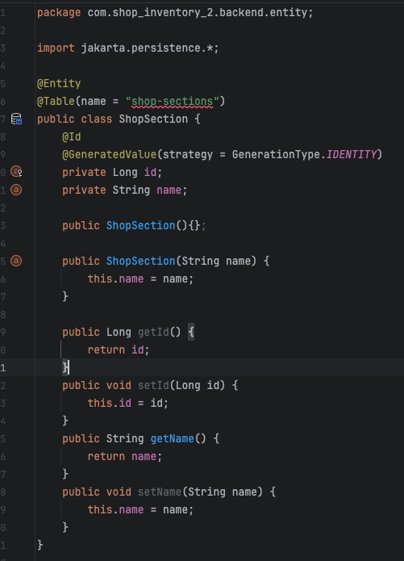
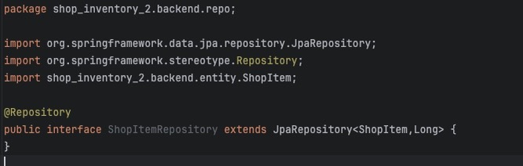
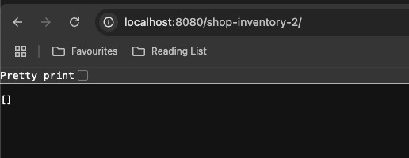

Setup and Requirements
Requirements
- Mac OS (or work on another machine, but translate OS-dependent methods accordingly)
- Github Account and basic understanding
- IntelliJ IDEA integrated development environment (can choose another, but with no guarantees it'll be the same experience!)
- Maven (dependency manager)
- Vite (CLI tool for creating React-TS project templates)
Github Setup
It's always worth having a remote backup of your work even if working alone. Create a new private repository with the name "shop-inventory-2". I've personally always had issues with getting .gitignore files to play ball in the way I want, but I added a Maven .gitignore template during the creation process and then later pasted some more .gitignore stuff from from a Google search for React-TS work
With the Github Repo set up, clone this using the SSH link to a desired location on you computer.
Spring Setup
Go to start-spring where you can automatically generated a basic project template for the backend.
- Language = Java
- Dependency Manager = Maven
- Spring Boot version = Default selected (should be a stable version, we're using 3.4.2)
- Group = shop-inventory-2
- Artifact = backend
- Description = whatever you want
- Name and package name should automatically take your previous entries into account
- Packaging = jar
- Java version = 21
In your depenencies section on the right make sure the following are selected from the search bar:
- Spring Data JPA
- Spring Web
- H2 Database
The Spring Web dependencies set up your project for a RESTful API service, Spring Data JPA (Java Persistence Library) can be thought of as a wrapper around a database so that we can continue writing pure Java, and underneath our code is translated into the correct database queries. The H2 database is the database we'll be using. It's an in-memory databse, very small, very fast but note since it's in RAM it won't persist, You'll lose all your data every time you re-start your app.
Click Generate.
Double click on the downloaded file to extract, and move to your
cloned repo. If you wish to commit, I would recommend just doing the
application.properties file, plus any
java files you will create later.
Your setup should look like this:
To give a quick tour, here are the key bits to be aware of:
- Your app's Java code will live in: src/main/java/[yourPackageName]/
- When you run the BackendApplication file, this runs the whole Spring Boot application - you can prove it works by running it and going to your local host at port 8080. It should give you a Whitelabel Error Message which means it's on, but nothing has been provided for display.
- The resources folder can be used for HTML and even static SQL files on startup. I haven't worked out how to get much of this working, but if you had such data it could go here.
- application.properties contains much of the background that Spring Boot needs to run. It will currently just have "spring.application.name=backend"
- Test folder - yes we will have to test... such is life :D
- pom.xml - Maven's tracker for all dependencies. We may need to play with this later. If a dependency needs refreshing, go to the little Maven "m" in the IDE in the top right and click "reload all maven projects as shown below. Things usually look red when there's an error.
App model: Controller, Service, Repo
We will be using the Controller, Service, Repo structure in this project.
- Controller - Manages the REST interface. Entry point for all HTTP requests.
- Service - Takes Controller signals and interprets them incorporating your business logic.
- Repository - The Storage System (in our case, it's actually a Java wrapper around the real database and each table gets its repo)
When an HTTP request comes in, our controller asks the service layer for the response, the service layer asks the repository and providing everything is set up correctly we'll get the right result! If a return message is needed the controller sends this back to the client (e.g. GET request). If it's a POST/PUT/DELETE request by default there's an automatic "OK" message (e.g. 200 status) sent back to the client.
CRUD template for our API
During this code-along, we will need to implement a basic CRUD repository set of API requests:
- Create - The client will send a POST request with JSON data in the body to add an Item to our shop
- Read - The client will send a GET request either for all the items, or for specific filters for items.
- Update - The client will send a PUT request with JSON data to update the details of an Item or Shop Section
- Delete - The client will send a DELETE request with the ID of the item to delete
Folder Structure Setup
To start coding, create the following subfolders (called "packages" in the IDE) in the existing folder where your ShopInventoryApplication file is.
- entity - this will store the definition of Shop Item and Shop Section
- repo - this will contain your two tables (items, sections)
- transfer - here we will create DTOs and DAOs as required (more on these later)
Note: for ease, we will refer to the folder containing the "BackendApplication" file as our "root folder".
Create the Layers
Tip: if you ever want to make a change to all three layers, start with your repo and then work upwards! Otherwise, IntelliJ won't be able to predict what you're doing making the process harder.
In this case we are going to work upwards too:
Entities > Repos > Service > ControllerCreate the Entities
Inside the entity folder, create a class per entity as described below:
1. Shop Section entity
Notice how we have labelled it as an Entity using the annotation. This tells the persistance library we will be storing these in our database. The @Table annotation along with a name and string tells it the name of the table that contains this entity. The @Id and @GeneratedValue tell the persistance library to automatically manage the creation of a unique ID every time we save a new item to the table. Note that when modifying an item we would want to use the same ID of whatever table entry we're modifying. It needs to be public. This is why we also provide a number of getters and setters below for completeness as we may use these later. In retrospect, we probably won't need the setID() method but let's leave it there...
Lastly, notice that we provide two constructors: an empty constructor (required) and a full constructor (so that we can make some of our own instances of the class later on).
Ignore the red underlining of "shop-sections". This is just because the IDE doesn't know about table names.
The IDE provides some useful information on the left hand side. Notice how there's a little orange "a" on the left, and the field for the unique ID has a small key on it. This is the IDE's way of telling us that we've set these fields as columns in our table, and that the ID is the primary key. In the next part on shop items, pay attention to how thr IDE represents a JOIN between two entities. If you want to see all of your database fields, you can do so by clicking on the little "a" signs and it will open a "persistence view" in your window.
2. Shop Item entity
...plus please fill in the getters and setters for all the fields! (It was a bit too long to fit in this screenshot.)
You will notice the creation of this follows the same template as the other but with one added feature: the "@ManyToOne" join column annotations tell the database to connect the section value of the shop-item with the table we already described called "shop-sections". Since we could have many items in the same section, we're classifying it as a many-to-one relationship. Finally notice that the ShopSection field for this class is not the ID of the shop section, but rather the object of the shop section itself. This is the convention for JPA repositories when referencing the entity key of another table.
Create the Repos
The repository is not the whole database (that's abstracted away from us). Instead think of each repository as a table (defined through an interface in Java Spring-Boot). We have two tables: a Shop Item Table and Shop Section Table.
Note I will be explicity using the term "shop" item/section for these variables because we want to be very specific. In the future, we could extend our model with other items. Maybe there are some in a warehouse in which case they would be warehouse-items. We could also have other things in the shop like shop-locations, shop-aisles, shop-tills...
Firstly, let's create the Shop Section repo

That's it! The annotation for the repository informs the framework that it represents a table and it extends the JPA repository. You may see online some "extends CRUD repository" interfaces too. In our case, we want the JPA which is already an extension of this CRUD layer.
It's worth noting the section in angular brackets:
ShopSection, Long. If you hover over the
JPA repository it will say it expects "T, ID". These are generics
which are explained really well by this youtuber:
Java Generics Video
In essence, what the interface is saying is "I can take any
object of type T which in this case is
our ShopSection , but I also needs to
know what type the ID type will be for
this class." In our case it's a Long.
Shoutout to John: this youtuber is one of the best Java tutorial providers online I've found so far!
Comment: if you search google for the explanation of the interface name you'll get this:
JpaRepository DocumentationPerhaps hardened Java coders read this page like Rapunzel, but when learning the ropes....?!
Now the repo for Shop Items:
We're now sorted with basic repositories. On to the Service and Controller!
Create the Service and Controller
In your root folder create the Controller and Service classes as follows:
Service Layer
The service contains our business logic.
For example, when a user adds an item later on with a POST request, the item may contain a new shop section or it may use a previously defined shop section. One way to go about this would be to use the Service layer to check if the section exists, and if not create one. The opposite would be the case for deleting an item (if the section was no longer in use, we'd delete it).
This is all purely optional remember! We could equally say that the shop sections are set in stone and cannot change beyond certain pre-defined values. The when creating a new item, the Service layer would check that the shop section being used was valid, and if not rejected the change.
To create the service layer, add the following code to your Service class:
It's worth considering what we've just written. We've annotated the class as the service layer in the spring framework, and then told it to keep track of two repositories (database tables): shop items and shop sections
What's "@Autowired" I hear you scream? Magic.
In reality, it's to do with something called dependency injection. Java permits you to annotate classes so that Spring Boot can recognise them (e.g. @Service). It then goes inside and anything with "@Autowired" is immediately "injected" with the things it needs... getters, setters and even declaration in the initialisation of thr Service variable. Compare this with how you would normally set a field for a class:
- Declare the field
- Set the field in the constructor
- Define the methods for getters and setters
Spring Boot pt. 12: Dependency Injection and @Autowired explained
Create the Controller
Add the following code to your controller class:

You will notice it's virtually the same as the Service layer in structure, but the annotation uses "Controller" and the injected class is the Service Layer.
If you run the Application now, you will still get a "Whitelabel Error Page". Why? We have defined out classes, but we haven't told any of the layers what to return for any HTTP requests! When you go to Port 8080 on LocalHost you therefore have no data except the backup Error message Spring Boot provides out of the box.
Create our basic Mappings
We will map specific HTTP requests to specific actions in our back end program and return something.
We will start with the simplest: the GET request.
GET request: return the whole database
Our aim is to map the following HTTP request:
http://localhost:8080/shop-inventory-2/
1. Check if we need to define the method in the Repo
For methods later on this becomes more important. However, if you were to search for all the methods supplied out-of-the-box by the JPA Repo interface, you would find there's already a method called "findAll" so we actually don't need to do any work on the Repo layer. Moving on!
2. Add the method to the Service layer
Add the following code to your Service:
3. Add the method to your Controller layer
Add the following to your Controller layer
Notice how we add the annotation "GetMapping" to tell Spring Boot that we're describing a function that responds to a GET request. Furthermore, in the brackets we tell it exactly what the path is that we're responding to (except the beginning bit for localhost which is automatically configured as the root address).
Now re-run your application and you will probably still get an error. That's because we used "Controller", but actually we should be using the annotation "RestController" for this layer. Change it as shown below, re-run the application and you should get a black page with an empty array when you open http://localhost:8080/shop-inventory-2/. Congratulations! You've implemented a GET request! Since there's no data in the database though, it's just an empty set of brackets.
Output in Chrome:
Opening the H2 Console in Chrome
One neat tool for investigating what the H2 Database looks like is to open it's graphical user interface called the "Console" in Chrome.
Go to the Application.Properties file, and add two lines as shown below:
Now open the following page:H2 Console
This will take you to the login page. Your settings shouldn't have ny passwords, so just click connect:
When you connect, you'll see that you do indeed have two tables named "shop-sections" and "shop-items" and on opening their details in the side bar, they'll list all the fields we had provided. This is proof that everything's working, yay!
POST request: add item to database
It's a bit boring having an empty database, so it would be useful to be able to add an Shop Item and its corresponding Shop Section. The data for POST requests will be stored in the "body" of the request as JSON. We're going to have to do this in three steps:
- Make a Data Transfer Object (DTO)
- Create the necessary function in the Service and Controller layers
- Create and send a POST request in our IDE
1. Creating a DTO
While at the moment it wouldn't be essential for a DTO to be used, as the project becomes more complex it will become useful. The idea is to have one format for the POST requst (JSON), one format for the repository (your Item/Section classes) and in between there's a DTO.
Sometimes we distinguish between incoming data DTOs and outgoing ones. For example, the outgoing DTO may not contain database implementation details such as which user of our system added the item, only what the item is. The outgoing data may include a set of unique IDs but these would not be provided by the user when POSTing a new item (as it's the databse that handles the unique ID generation, not the client).
Create a new class called NewItemDTO inside your existing package called "transfer" and write the following code, plus the getters and setters for all fields (not shown):
There's no extra logic or processing on creating the DTO because our example is simple, but that's OK for now. Notice that the section field is a String, not the class for ShopSection.
2. Adding the POST request functions to the Service and Controller
In the Service, we'll add support for the POST request to add an Item as shown below.
Before adding the Item to our repo, we need to check if the Shop Section is new, or an existing Section. If it's new, we need to add this first or there will be a JOIN error. Add the following private method to your Service:
Notice the error: it can't find a method for the repository of Shop Section that matches "countShopSectionsByName". This is because while some generic methods are "automatic", those with specific names according to our project variables must be somehow setup in the repo first. To do this, go to your shopSectionRepository class and add the following code (it should auto-complete):
We can now use this method in our private Service layer method. Note that the code below has also been refactored using some helpful tips from IntelliJ!
Now we can continue and create the actual method that will add a new Item in the Service Layer (apologies for the low zoom):
So, to summarise this sction we have created two Service Layer methods. Each method needs to be recognised in the Repository Layer (since it's a custom method). Note the order of the process:
- Save a new ShopSection in the Section Repo if it's a new section name
- Fetch this ShopSection from the database including its unique ID
- Create a new ShopItem with all the DTO data BUT using the ShopSection object from the previous step
- Save the new item using the automatically provided repository interface method "save"
Again, we have a red error in the previous photo. The repo doesn't have a user-defined method yet for "findShopSectionByName". Let's add this in the Shop Section Repo:

At this point you may well be asking "how on Earth is Spring Boot able to work out how to implement the database method written in SQL simply from our named methods? Honestly I don't know, but it's pretty clever huh?
Our last bit of this section is to add to the Controller Layer. We've done all the hard work of implementing the business logic in the Service layer, so just add the following method to the Controller:
Notice that Spring-Boot has its in-built way of converting your JSON http request body directly to the NewItemDTO.
3. Running a POST request
Our code is ready to accept a POST request! However, how do we send one over? POSTman is a common tool you can use, but I think one step simpler is to use a ".http" file. Write the following code inside your root source folder, and call it "requests.http":
See the little green "run" arrow on the left hand side? Re-start your main application, then click this little arrow. If everything has been set up correctly, you'll receive an OK status code (200) in your service report. Just to explain where everything is, see the diagram below:
If you've clicked the green arrow once, click it one more time. Now open your localhost and clicking "prettyPrint" in Chrome to read the JSON better should give you:
And if you go to the H2 console, click on the ShopItems table (which will auto-complete an SQL request) and then run. You'll get two results! Notice how the database automatically generated our two unique IDs even though the rest of the data was identical.
Now run the command in the same way, but for the "shop-sections" table:

It hasn't done anything weird, like create two identical Shop Section names which means our Service Layer Logic seems to be working.
Recap:
- We created some service layer logic to check if our new Item data used a new shop section or not and added a Shop Section as required
- We saved a new Item to the repository using this shop section
- We add the adItem method to the Controller
- We created a POST request in a ".http" file
- We inspected the output in our "Services" tab, our H2-Console and our JSON output in Chrome when running a GET request for the whole inventory
Supercharging your POST requests with AI
As a small aside, two items are easy to write by hand, but to create a lot of them, you can prompt your AI pal of choice to generate lots of your own HTTP requests to have a larger dataset to work with.
PUT request: update an item in the database
Following on with our CRUD methods, our next task is to be able to update our repo. This is traditionally done by sending a PUT request, and much of the logic it will be identical to our POST request. You may find some of the logic is so similar you can re-factor your code to reduce code duplication later on.
Updating an item has one key difference from adding items: we need to change an existing Item/ShopSection using its unique ID and not create a new one.
1. Create a DTO which includes the Item ID
Since our PUT request includes an ID, but our existing DTO does not have a field for the ID we will make a second (almost identical) DTO called UpdatedItemDTO in the same "transfer" folder. Here is its code (remember to add the setters and getters at the end too):
2. Create the logic in the Service layer
We want the Server to manage the ShopSections automatically, so that whenever the user changes anything in the ShopItems repository, the Sections update themselves automatically. To do this, copy the following code into your Service. We will fix the missing method in red shortly:

Make sure you're happy with how the code is ordered. We are:
- Finding the original Item
- Finding its original Shop Section
- Adding a new Shop Section if it's not already present
- Transferring all the data from the DTO to the original shop item (except the ID)
- Saving the updated Item
- Removing any sections that are no longer referenced by the Items Table
3. Adding the Shop Section method to remove unused Shop Sections
Add the following private method to your Service Layer:
Lastly as we have done before, to fix the red error we just need to tell the Shop Items repository layer that we have this new method for getting all Items by Section so that Spring Boot can do its magic:
4. Adding the Controller method
As before, the complicated bit is done in the Service Layer. Now we just add the Controller method:
Let's re-run the application, perform the same two POST methods as before, and then run the following two PUT methods to change the Task Section from "Sweets" to "Confectionary". If you follow the changes in the H2-Console each time, you should see an extra Shop-Section get added, and then once the original "Sweets" section is no longer in use, it will be deleted using our Service Layer logic.
Delete an Item
Overall, the logic for handling a DELETE request will repeat many of the previous stages so let's quickly bash them out!
1. Create the method in the Service Layer
2. Add the method to the Controller Layer
Note we didn't have to add any methods to the Repositories since the basic "delete" method is common across all databases and relies solely on an ID (not something unique to our Project).
Remember to test it works as expected. Here is the sample HTTP request:
So, we've done the four basic processes in CRUD! We could now add some filters when GET requests are submitted before moving on the Front End...
TBC